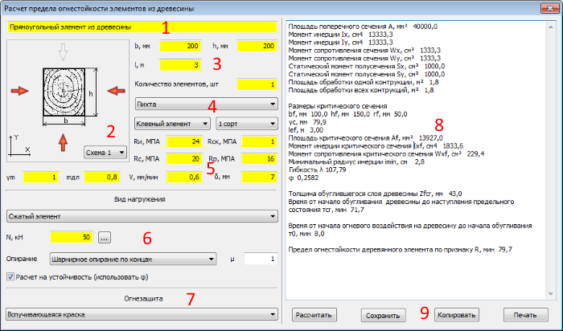

Окно
Расчет предела огнестойкости элементов из древесины
Содержит
элементы выбора,
ввода данных для расчета и отображения результатов расчета и
управляющие
элементы.

|
1
|
Наименование элемента
|
|
2
|
Выбор схемы обогрева
|
|
3
|
Размеры |
4
|
Свойства древесины
|
5
|
Показатели свойств древесины в соответствии с СП 64.13330.2011
|
6
|
Данные для статическое расчета
|
7
|
Данные для огнезащиты
|
8
|
Результаты расчета
|
Поля
доступные для редактирования выделены
желтым цветом
9 Кнопки
|
Рассчитать
|
Расчет
по введенным данным
|
|
Сохранить
в таблицу |
Добавление
результатов расчета в таблицу "Конструкция" главного окна.
|
|
Распечатать
|
Вывод
на принтер результатов расчета
|
|
Cкопировать
|
Копирует
результаты расчета в буфер обмена Windows |
Кнопки дублированны в всплывающем меню редактора (8) (правая кнопка
мыши на
поле редактора).
Расчет предела огнестойкости проводится Приложению "К" С П 64.13330.2011.
Значения скоростей обугливания по рекомендациям ФГБУ ВНИИПО и Академии ГПС МЧС России.
Схемы обогрева по рекомендациям Академии ГПС МЧС России.
Дополнительные буквенные обозначения
V - скорость обугливания
А - площадь сечения
bf, hf - размеры критического сечения
yc, xc - координаты центра тяжести критического сечения
Аf - площадь критического сечения
Ixf, Iyf - моменты инерции критического сечения
ixf, iyf - радиусы инерции критического сечения
Wxf, Wyf - моменты сопротивления критического сечения
Sxf, Syf - статические моменты полусечения критического сечения
rf - радиус закругления углов прямоугольного сечения при обугливании
ef - эксцентриситет приложения нагрузки для критического сечения
λf - гибкость элемента при критическом сечении
φf - коэффициент продольного изгиба элемента при критическом сечении
Zfcr - толщина обуглившегося слоя древесины
δ - толщина слоя прогретой древесины, находящейся за фронтом обугливания и потерявшей способность сопротивляться нагрузке
τcr - время от начало обугливания древесины до наступления предельного состояния
τ0 - время от начала огневого воздействия на древесину до начала обугливания
Пф - предел огнестойкости деревянного элемента по признаку R
δп - толщина огнезащитного материала